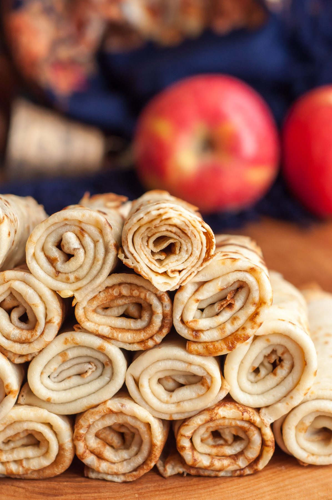

Blini or Crêpes

A blini traditionally also called a blin is a Russian and more broadly Eastern European pancake traditionally made from buckwheat flour or nowadays wheat and served with smetana, tvorog, butter, caviar and other garnishes.
They also may be folded or rolled into a tube with sweet or salty fillings such as varenye, honey, fruit, berry, mashed potatoes, cooked ground meat, cooked chicken, salmon, chopped boiled eggs with green onions or chopped mushrooms.
Ingridients:
- 2 1/2 cups milk,
- 3 eggs,
- 2 cups flour,
- 2 tbsp sugar,
- 1/2 tsp salt,
- 3 tbsp vegetable oil,
- 1/2 cup boiling water,
- 1/4 cup melted butter + more for greasing.
Steps:
- In a large mixing bowl whisk the eggs with salt and sugar. Add half of the milk and mix. Then sift all the flour into the mixing bowl and mix to combine. The batter will be thicker than the batter for pancakes, but this way we will eliminate the lumps that might form in the batter.
- Gradually add the rest of the milk and mix. Then pour hot boiling water while whisking the batter. This will make our crepes thin and elastic. At the end add oil, mix everything and leave the batter to rest for 15 minutes.
- Preheat 2 non-stick pans over medium-high heat and grease it with a little knob of butter. I prefer to use 2 skillets at the same time as it makes things go much faster. When the pans are hot, working one at a time, pour in about 1/4-1/3 cup of batter, depending on the size of your pan, into one side of the pan and swirl it quickly to cover the entire pan with a thin layer of batter.
- When the top of the crepe has no more wet spots and edges turn crispy, run the spatula underneath the edges of the crepe, then lift it with hands or spatula and flip it over. Cook for another 30 seconds and remove to a plate.
- Cover each crepe with melted butter using a pastry brush and stack them on each other. Continue cooking crepes until no more batter remains greasing the pan with butter before each crepe.
- Serve warm with different toppings or stuff with either sweet or savory fillings.